0x00 前言
契机是因为最近 App Store 开放了相关政策，允许了类型为模拟器的 app 上架，因此被 Delta 模拟器打响了头炮火了一把。
于是我也把我尘封了多年的 iPad Air2 掏了出来，在上面装了 Delta，然后在某宝又花了 30 块买了个 ShanWan 迷你手柄，这样我的 iPad 就改装成三合一（GB + GBA + NDS）游戏机了：
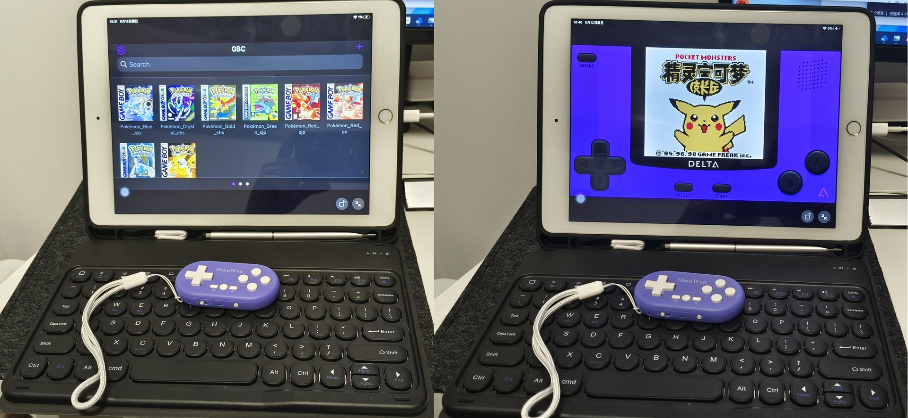
拿着手柄在家玩确实不错，但是有个问题是 iPad 太重了，不适合带出门玩，而且还要多拿个手柄，没事找罪受。
但很快地我又想起了我那台已经成为化石的 3DS，用 3DS 改造多合一模拟器难道不更香吗？
但是我翻出 3DS 后发现，它实在太久都没使用了，尤其是当年的破解系统还是 A9，很多工具都用不了，于是就开始了我长达一周的翻新改造之路 …
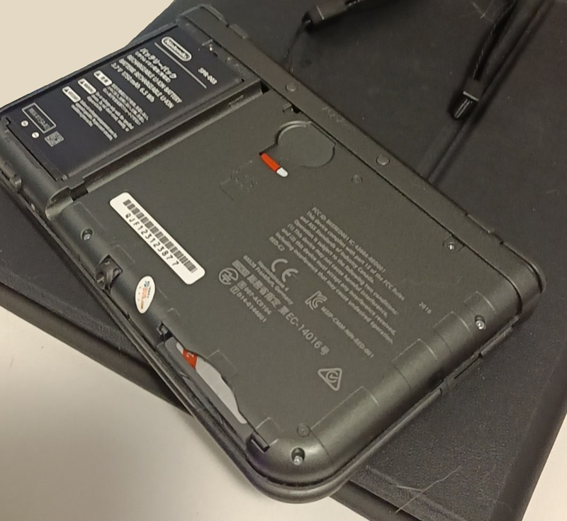
0x10 3DS 破解（Luma 升级）
3DS 现在已经可以完美破解了，主流破解都是使用 B9S，而我的机器是 A9 破解：
Luma3DS v5.5-a9adb998d (dev) configuration
luma 版本低于 7.05 都是 A9，大于等于 7.1 都是 B9，
B9 = B9S
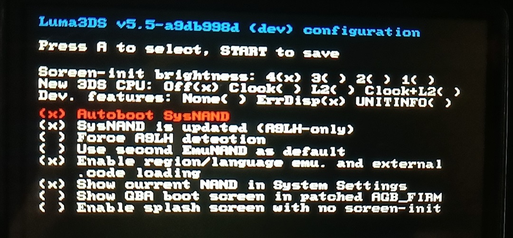
首先关于 3DS 破解教程，目前最权威、最准确、最新、还免费的就是《一只火狐的杂物间》，不需要到某书、某乎上面乱翻（很多都是搬运火狐的）。
因此这里也是直接引用火狐的教程：
- 《3DS 破解-开始》
- 《更新 Luma7.0.5》
- 《A9 转 B9》
- 《升级 B9S 1.4》
- 《安装自制工具套件及备份系统》
主要破解/升级 luma 流程可以参考这 5 篇，我这里再额外记录一下过程遇到的问题：
因为我的 3ds 是 17 年在电玩巴士买的，所以在《更新 Luma7.0.5》出了问题：替换根目录的 arm9loaderhax.bin 后，luma 版本没有任何变化。
甚至于我删除根目录的 arm9loaderhax.bin，还是可以进入 luma 5.5 系统，说明这个文件并不是关键文件。
咨询火狐后才知道，电玩巴士制作的破解系统比较特殊，不会用到根目录的 arm9loaderhax.bin 文件。
而是需要把 arm9loaderhax.bin 重命名为 boot.bin 后，放到 homebrew 目录。随即升级成功：
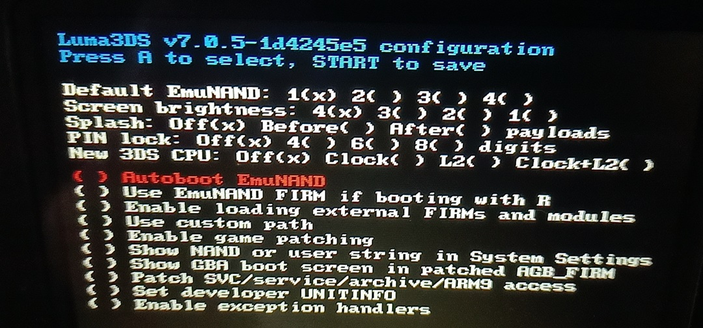
在《A9 转 B9》时，也需要做出调整：除了保留教程的文件外，根目录的arm9loaderhax.bin 文件和 homebrew 目录也需要保留。
随后按教程说法按住 Y + 电源键 开机，即可正常升级到 B9（luma 13.1）：
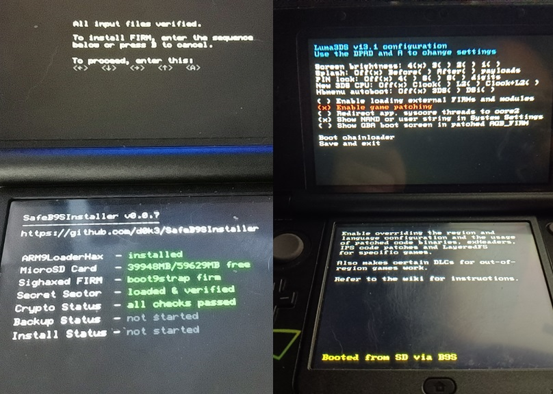
当 luma 系统升级到 B9 后，电玩巴士所制所的 A9 系统问题随即也被拨乱反正、不复存在了，以后按照教程步骤执行即可
本节相关工具下载
- SD 卡格式化工具： 【提取码 rua6】
- Luma 7.0.5: arm9loaderhax.bin
- A9 转 B9 升级包: 【提取码 OZgU】
- B9S 1.4 升级包: 【提取码 1yBX】
0x20 系统汉化
任天堂已宣布 3DS 和 WiiU 的在线服务于 2024-04-09 正式停止，因此此后应该不会再有更新。
在汉化系统前，我们可以升级 3DS 到最新版本 Sys 11.17.0-50J
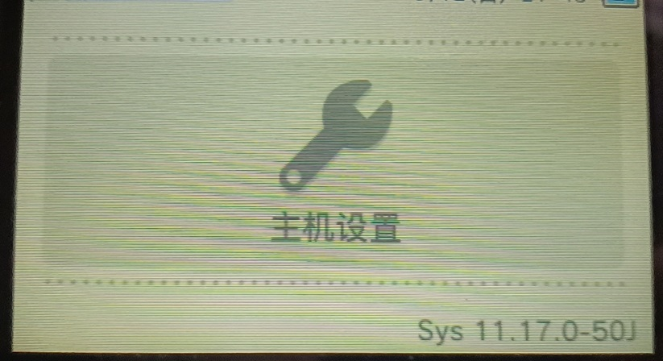
然后汉化前建议备份整张 SD 卡。
汉化过程可以参考这个教程《Nintendo 3DS 系统中文化补丁》，比较简单：
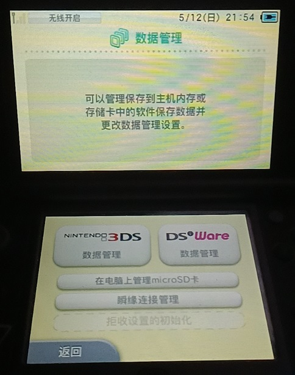
0x30 Anemone 主题安装（可选）
3DS 可以用 Anemone 工具管理系统主题，可以顺手装一个。
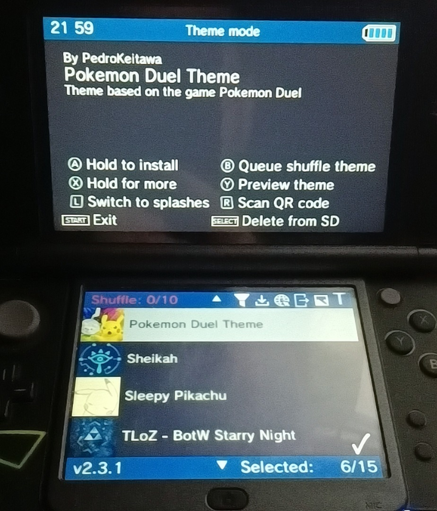
系统主题可以在 themeplaza.art 站点下载，Anemone 支持直接使用 3DS 扫码下载安装，十分方便：
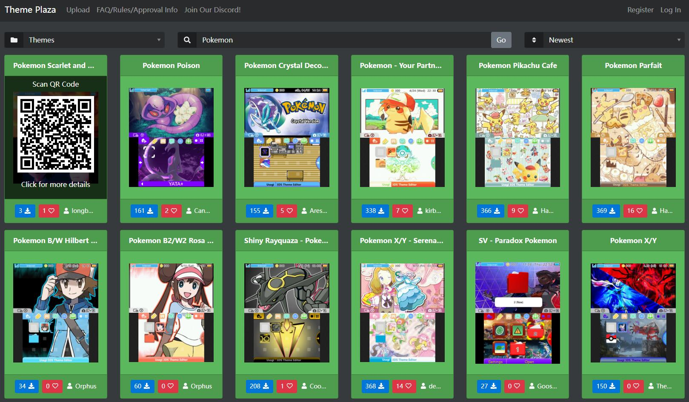
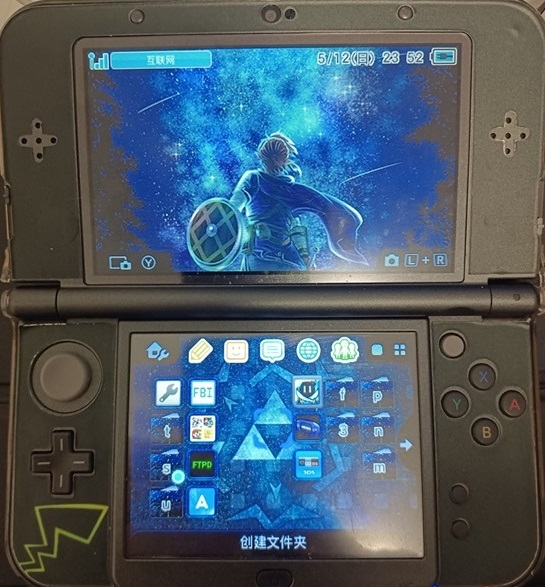
0x40 安装 ftpd
经过前面的过程中，可以发现经常需要在 3DS 和 PC 之间多次插拔 SD 卡，而 SD 卡需要拆除 3DS 后盖，十分麻烦。
其实可以装完系统后，第一时间在 3DS 安装一个 FTP 服务端 ftpd.cia：
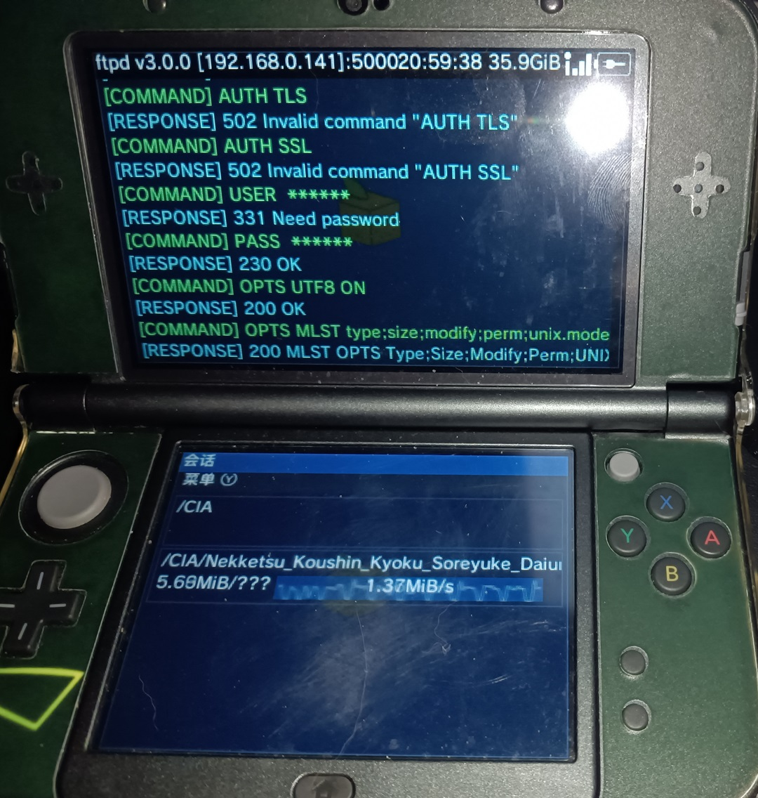
这样在 PC 端只需要安装一个 FTP 客户端（如 FileZilla），尔后只需要确保 3DS 和 PC 接入同一个 wifi 局域网，即可使用无线网络管理 SD 卡上的文件：
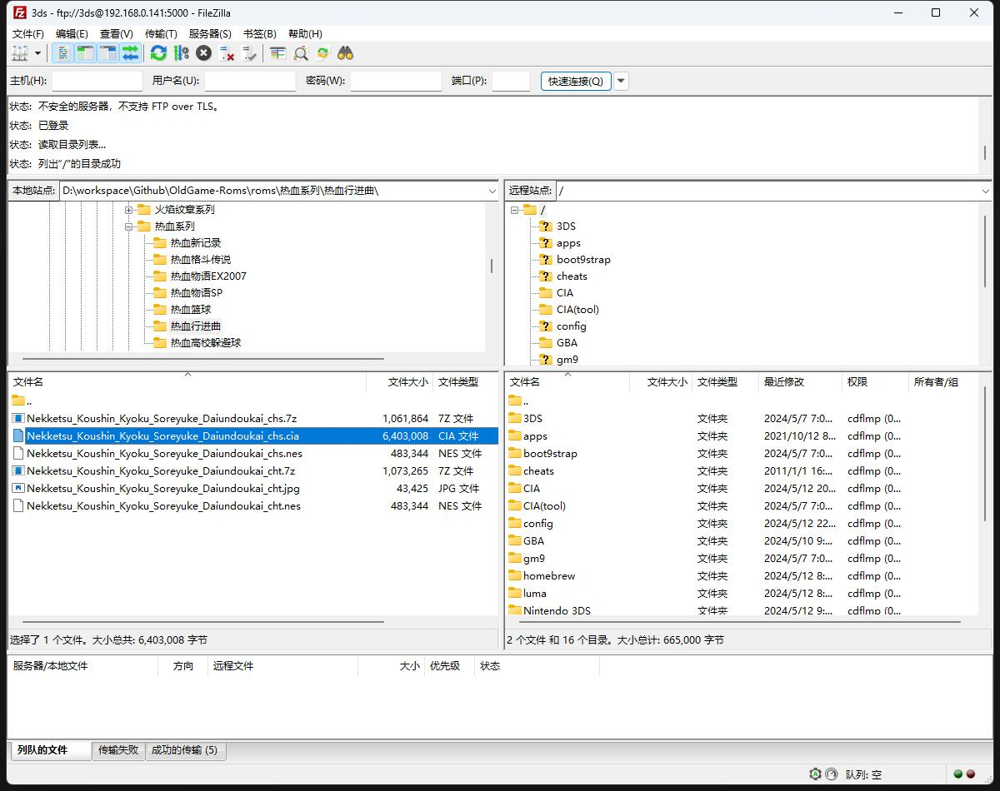
传输到 SD 卡的文件可以使用 FBI 或 Title Manager 工具进行管理
0x50 模拟器安装
0x51 NDS 模拟器
3DS 官方是支持 NDS 游戏模拟的，但需要用到 R4 卡：
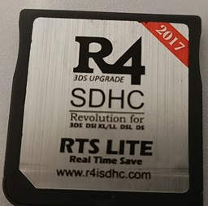
由于我升级了系统，与之前 R4 卡的内核不兼容，导致无法打开 R4 卡，因此需要格式化重装内核。
其实只要在 R4 解压内核文件即可，详细教程可参考《NDS/3DS 玩家必看！教你简单掌握 R4 卡的使用方法》
R4 卡的类型很多，所以关键在于找到 R4 卡类型对应的内核。
我的卡是 R4i-SHDC RTS Lite 银卡，在官网找到对应下载链接：
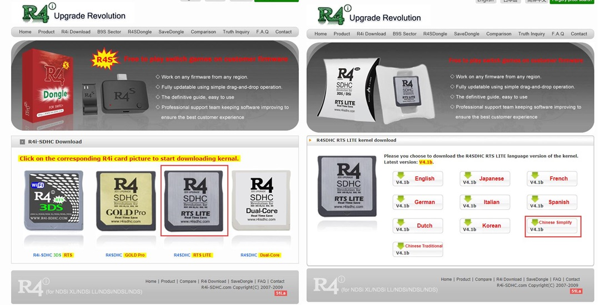
但是重装内核后，虽然可以进入 R4 卡，但是打开任意 NDS 游戏都会卡在 Loading …
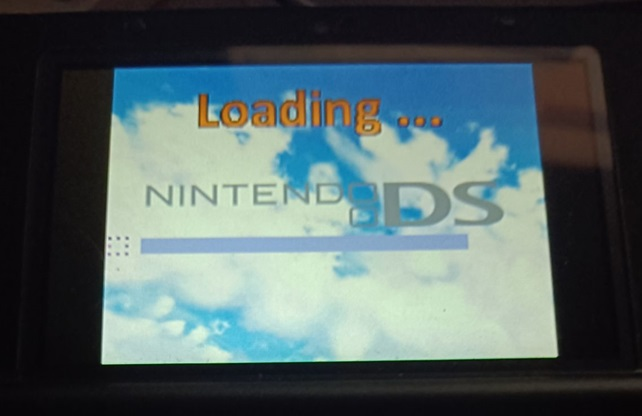
最后我发现我的 R4 卡右上角还有一个 2017 的标签，猜想不能用通用版本的内核，可能要找回 2017 年的内核。
继而找到这篇文章《Anyone have the firmware for the r4 sdhc rts lite 2017?》，我的猜想可能没错。
于是我重新下载 R4 3DS RTS 2018 Firmware 内核，该内核支持 2016 ~ 2018 的 R4 卡（此内核只有英文版下载链接，但是安装后可以切换语言为中文）
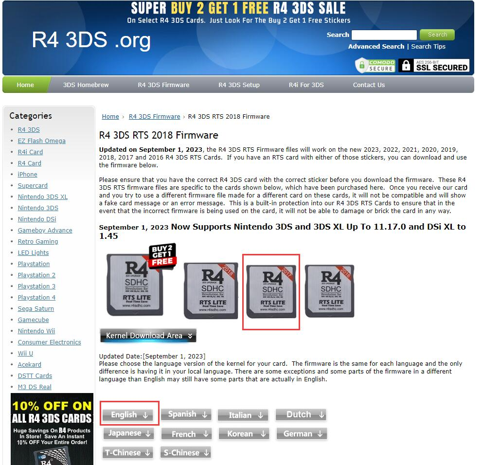
重装专用版内核后，终于可以正常进入 NDS 游戏。
但是我发现过了一段时间后，再次打开 R4 卡系统就会报错：
wrong date or firmware expired please check nds machine date configuration
查阅相关资料发现，R4 COM 烧录卡在历史版本中加入了时间炸弹。
但是官方在 2024-11-24 更新了 v4.3 版本的内核，移除了时间炸弹并改善了游戏兼容性。
因此推荐安装 v4.3 版本。
0x52 GBA 模拟器
由于本人很喜欢口袋妖怪系列的游戏，所以 GBA 是必须要安装的 3DS 模拟器。
3DS 玩 GBA 有几种方式：
| 推荐度 | 方案 | 优点 | 缺点 |
|---|---|---|---|
| 不推荐 | R4 里面安装 GBA 模拟器 | 可以不占用 3DS SD 卡空间 | R4 卡里面本来就是 NDS 模拟器，相当于在 NDS 模拟器里面再跑一个 GBA 模拟器、再跑 GBA 游戏，真的能卡到怀疑人生 |
| 一般 | 安装 mGBA 模拟器 | 通过 CIA 安装模拟器，非常方便，适用回合制游戏 | 无法读取 R4 卡，占用 3DS SD 卡空间；玩 FPS 游戏可能会掉帧 |
| 一般 | 使用 VC 工具把 GBA 游戏制作为 CIA | VC 是 3DS 官方推出向下兼容的一种模拟方式，可以把其他主机的 ROM 转制成 CIA 格式，直接安装即可流畅运行，且支持快速存档 | 其他主机 ROM 转换为 CIA 后，可能因为格式、语言等兼容性问题无法在 3DS 中运行，存在失败率；每个游戏都需要先转换格式，比较麻烦 |
| 推荐 | 使用 open_agb_firm 内核模拟 | 可以调用 3DS 的 arm7 核心全速畅玩 GBA 游戏 | 无法读取 R4 卡，占用 3DS SD 卡空间；无法从 3DS 桌面启动模拟器；不支持快速存档 |
我同时使用了 open_agb_firm + mGBA + GBA 制作 CIA 三种模式，主要是不同的 rom 在不同的模拟器上运行都可能正常或异常，所以多留一手吧。
本节相关工具下载
- mGBA 模拟器: mGBA.7z
- GBC 制作 CIA 工具: 【提取码 B11O】
- GBA 制作 CIA 工具: 【提取码 t7Xm】
- open_agb_firm: oaf_boost.7z
0x53 FC 模拟器
同样，3DS 玩 FC 也有几种方式：
| 推荐度 | 方案 | 优点 | 缺点 |
|---|---|---|---|
| 一般 | 安装 VirtuaNES 模拟器 | 通过 CIA 安装模拟器，非常方便；支持快速存档；支持按键映射 | rom 不能使用中文名，管理游戏麻烦 |
| 一般 | 使用 VC 工具把 NES 游戏制作为 CIA | 类似 GBA， NES 游戏同样可以制作为 CIA 安装，流畅运行，支持快速存档 | 其他主机 ROM 转换为 CIA 后，可能因为格式、语言等兼容性问题无法在 3DS 中运行，存在失败率；每个游戏都需要先转换格式，比较麻烦 |
类似地，我同时使用了 VirtuaNES + NES 制作 CIA 两种模式，主要也是因为不同的 rom 在不同的模拟器上运行都可能正常或异常。
0x60 模拟器使用
0x61 NDS 模拟器
R4 卡的进入方法在 3DS 桌面的这个图标：
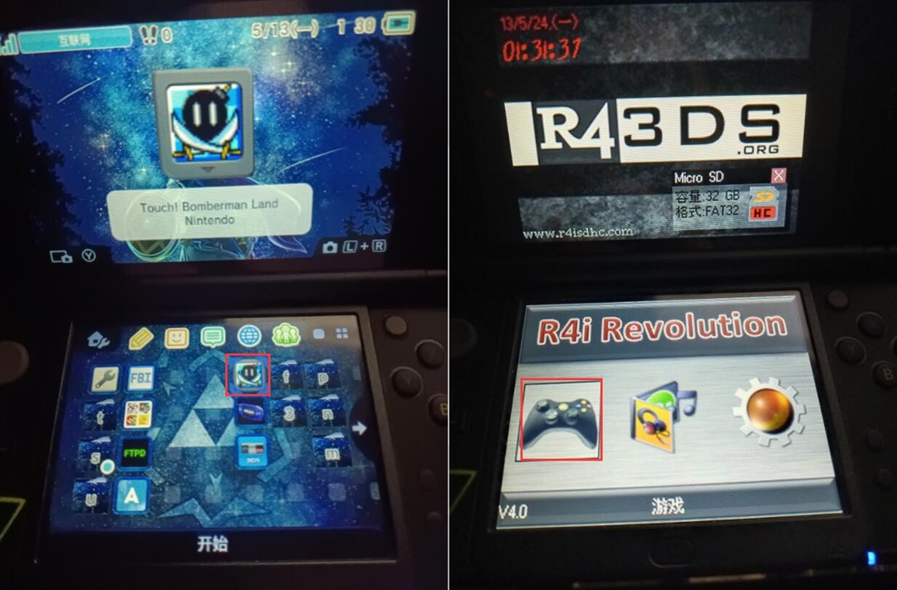
进入 R4 卡后，选择【游戏】即可查看 R4 卡内所有 *.nds 后缀的游戏。
在没有读写 R4 卡的情况下，在开机的情况下、可以热插拔。

0x62 GBA 模拟器
此处只说明 open_agb_firm 的进入方法：
在 3DS 关机的状态下，按住 start + 电源键 开机，可以在控制台看到启动菜单，通过方向键选择 open_agb_firm，按 A 键即可进入模拟器。
在 open_agb_firm 运行过程中，随时按住 电源键 1 秒即可退出模拟器并关机（注意登出模拟器前保存数据）。
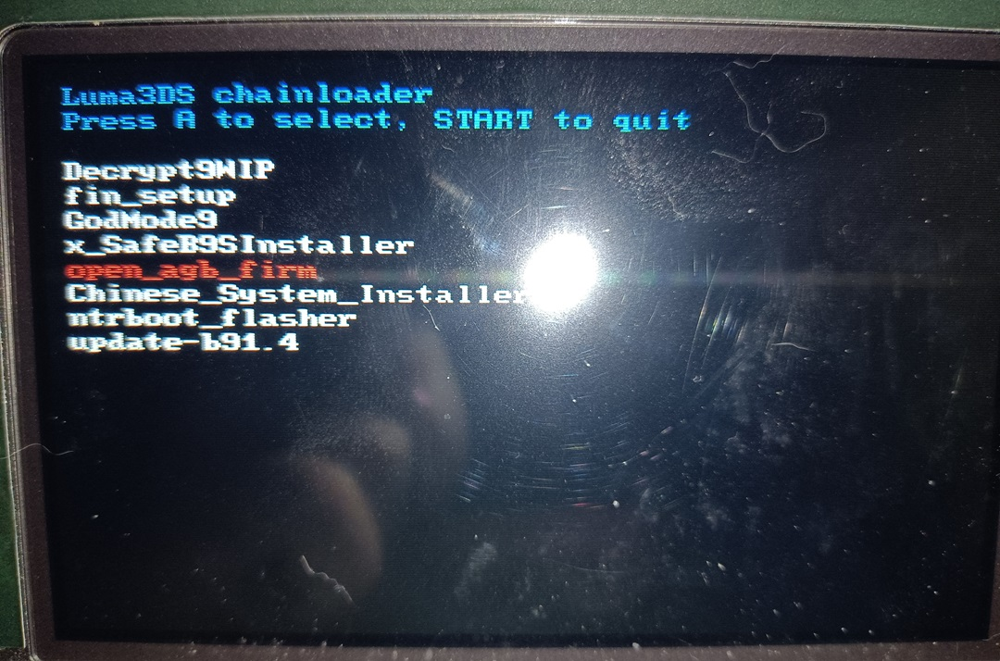
open_agb_firm 模拟器访问的是 3DS 的 SD 卡（非 R4 卡），因此需要通过 FTP 等方式预先把 *.gba|*.gb|*.gbc 游戏写入 SD 卡。

0x63 FC 模拟器
在 3DS 桌面找到 VirtuaNES 模拟器并允许即可。
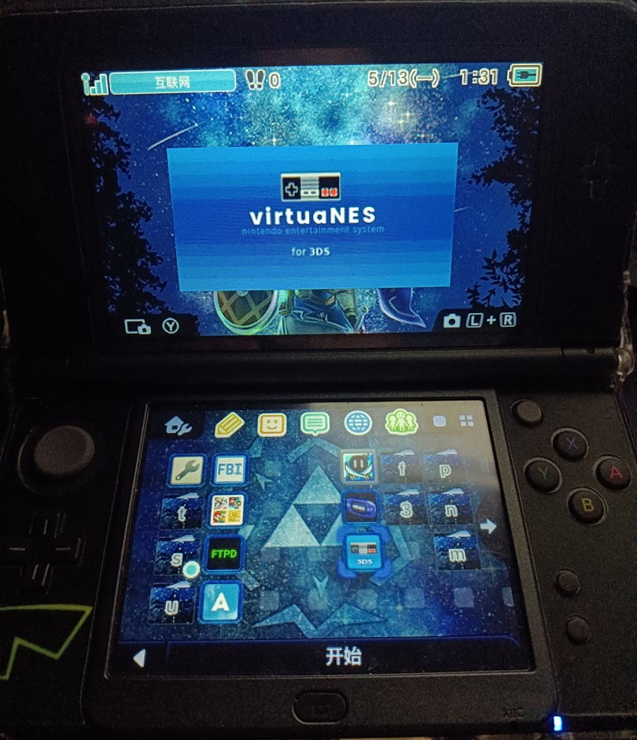
VirtuaNES 模拟器访问的是 3DS 的 SD 卡（非 R4 卡），因此需要通过 FTP 等方式预先把 *.nes 游戏写入 SD 卡。
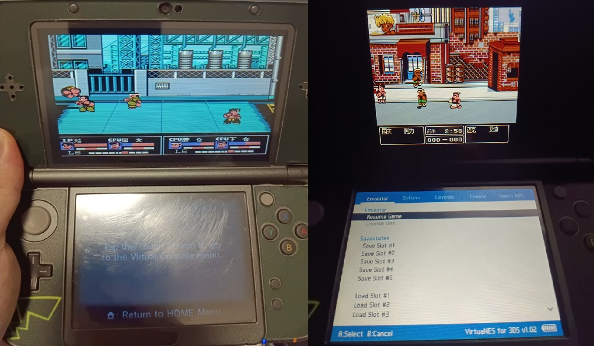
0x70 后记
其实至此我已经达到了我的目的了： 3DS + NDS + GBA + FC 四合一掌机。
但是 3DS 能模拟的远不止于此，更多的例如 MD、SFC、街机、PS1 等都能模拟，堪称史上最强大的模拟器掌机。
但是这些主机都不是我的童年，没有情怀就没有动力，看看以后有契机再研究吧。